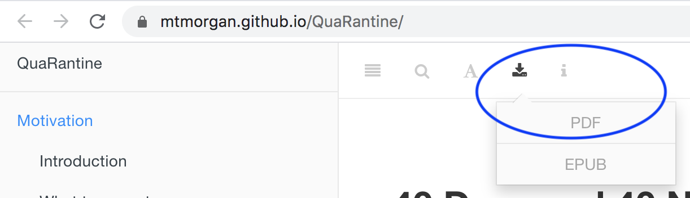
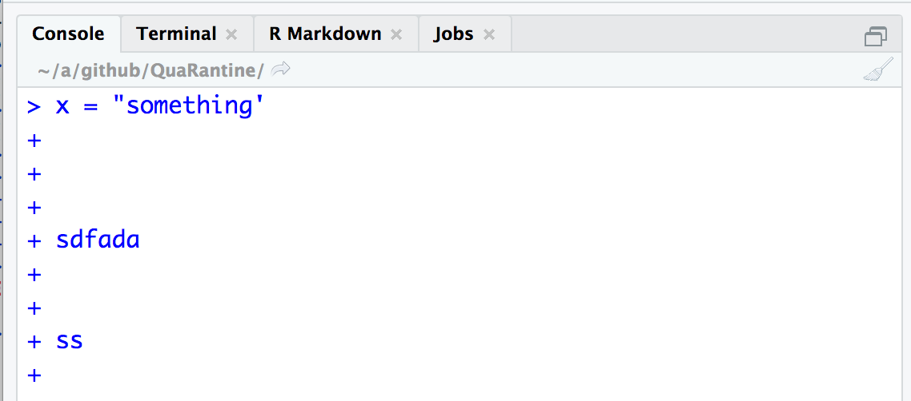
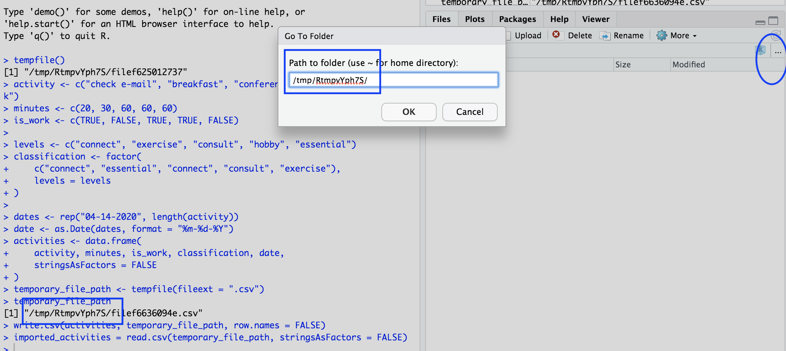
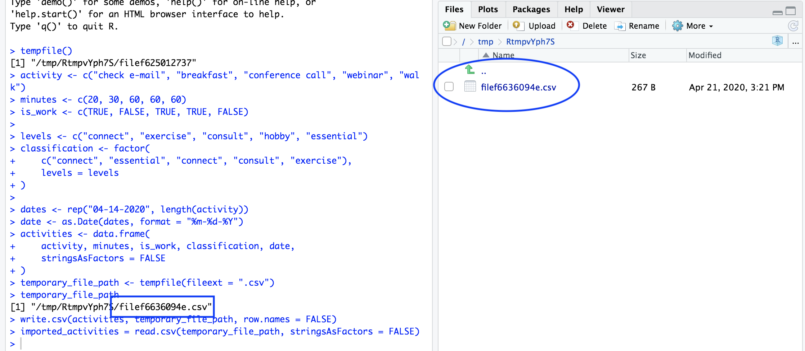

Frequently asked questions
Is the course material available in PDF?
Yes, click the ‘Download’ icon and PDF format in the title bar of the main document, as illustrated in the figure.
Remember that the course material is a ‘work in progress’, so the PDF will need to be updated frequently throughout the course. Also, the book is not pretty; that’s a task for a separate quarantine!

Whenever I press the ‘enter’ key, the RStudio console keeps saying
+and doesn’t evaluate my expression! See the figure below.
Notice that you’ve started a character string with a double
", and tried to terminate it with a single quote'. Because the quotes do not match, R thinks you’re still trying to complete the entry of the variable, and it’s letting you know that it is expecting more with the+prompt at the begining of the line.A common variant of this is to open more parentheses than you close, as shown in

The solution is either to complete your entry (by entering a
"or balancing the parentheses with)) or abandon your attempt by pressingcontrol-Cor the escape key (usually in the top left corner of the keyboard)Should I save scripts, individual objects (
saveRDS()) or multiple objects / the entire workspace (save(),save.image(),quit(save = "yes"))?Reproducible research requires that one knows exactly how data was transformed, so writing and saving a script should be considered an essential ‘best practice’.
A typical script starts with some data generated by some third-party process, e.g., by entry into a spreadsheet or generated by an experiment. Often it makes sense to transform this through a series of steps to a natural ‘way-point’. As a final step in the script, it might make sense to save the transformed object (e.g., a data.frame) using
saveRDS(), but making sure that the file name is unambiguous, e.g., matching the name of the object in the script, and with a creation date stamp.I can’t really imagine a situation when it would be good to use
save.image()orquit(save = "yes")– I’ll just end up with a bunch of objects whose content and provenance are completely forgotten in the mists of time (e.g., since yesterday!).- Where does RStudio create temporary files?
The screenshot below shows that the R session seems to have created a temporary file path, and it seems like it’s possible to
write.csv()/read.csv()to that file (no errors in the blue square box at the bottom left!) but the file doesn’t show up in the file widget (circle inFilestab on the right.
The file widget is pointing to a particular directory; what you’d like to do is navigate to the directory where the temporary file is created. Do this by clicking on the three dots
...(blue circle) in theFilestab, and enter the directory part of the the temporary file path (blue squares).
Once the file widget is pointed to the correct location, the file (last part of the
temporary_file_path) appears…
Navigate back to the original directory by clicking on the three dots
...in theFilestab and enter/cloud/project.Remember that the temporary file path is, well, temporary, and when you start a new R session (or maybe restart your cloud session) the temporary path and anything saved there may no longer be available
When I try to install a package, R says a binary version exists but a newer version exists ‘from source’. Do I want to install the binary version or the source version?
Usually, the answer is to install the older binary version.
The newer source version likely represents a bug fix or implements new features in the package, so at first blush it seems preferable. However, installing source versions of packages often require additional software that is not necessarily easy to install and maintain. You might spend a considerable amount of time configuring your system and working through arcane error messages to get the ‘latest’ source version.
Almost always, the updated binary version becomes available in a day or so, and the best strategy is to install the old binary version now, and re-install the package the next time you remember, in a week or so.
What is the difference between quotes
"(double quote),'(single quote),`(backtick)"and'can be used interchangeably (but always matching open and closing quotes) to represent and element of a character vector:"DNA"and'DNA'are the same. It can be convenient to use one style over another in particular situations:"3' DNA",'Tolstoy says: "All happy families are alike; each unhappy family is unhappy in its own way."', where the choice of quotes means that the ‘inner’ quote does not have to be ‘escaped’, e.g., using single quotes in the first example:'3\' DNA'.The backtick
`is a special quote, and says to treat the enclosed expression as a symbol name. We came across one use case in the world-wide COVID-19 data, where the column names wasRegion/Country. If we wanted to create a variable with that name, we could NOT writeRegion/Country = c("US", "Canada")because R would interpretRegionandCountryas variables that were to be divided. Likewise, we couldn’t use"Region/Country" = c("US", "Canada")because R would say ‘hey, you’re trying to assign a character vector to a character vector not to a symbol!’.says ‘create a symbol
Region/Countryand assign it the valuec("US", "Canada")’. Any time we want to use this variable, we have to quote it